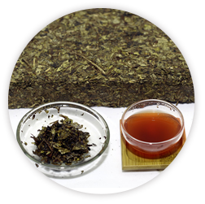
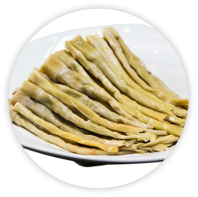
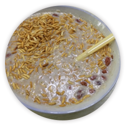
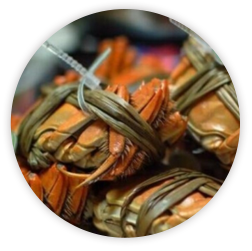
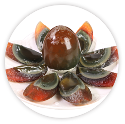
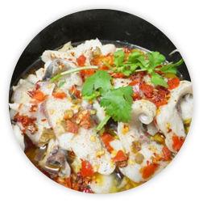
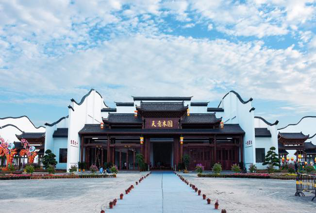

-

安化黑茶
黑茶属于后发酵茶，其独特的加工过程，尤其是微生物的参与使其具有特殊的中医药理功效，其富含茶多糖类化合物被医...
-

沅江芦笋
沅江芦笋，又名“荻笋”，生长在南洞庭湖的滩涂湿地上。它天赐野成，营养丰富，风味独特，集天然野生和绿色有机等...
-

擂茶
该茶主要以桃江绿茶、芝麻、花生、炒米、白糖或盐为原料，具清热消暑、补气养生之功效。...
-

大通湖大闸蟹
大闸蟹，为中国久负盛名的美食。其螯足用于取食和抗敌，掌部内外缘密生绒毛，绒螯蟹因此而得名。...
-

松花皮蛋
剥开蛋壳，只见晶莹碧透的蛋白表层，松花朵朵，若隐若现，茶色蛋白，橙色蛋黄，如琥珀含珠。这是以特有的东方...
-

蝴蝶飘过河
蝴蝶飘过河，是益阳赫山湖乡人民一道风味独特，专门用来招待亲朋贵客的美味佳肴。...

天意木国—世界木文化博物馆
天意木国——世界木文化博物馆，位于益阳东部新区鱼形山旅游风景区...
天意木国—世界木文化博物馆
天意木国——世界木文化博物馆，位于益阳东部新区鱼形山旅游风景区...
天意木国—世界木文化博物馆
天意木国——世界木文化博物馆，位于益阳东部新区鱼形山旅游风景区...